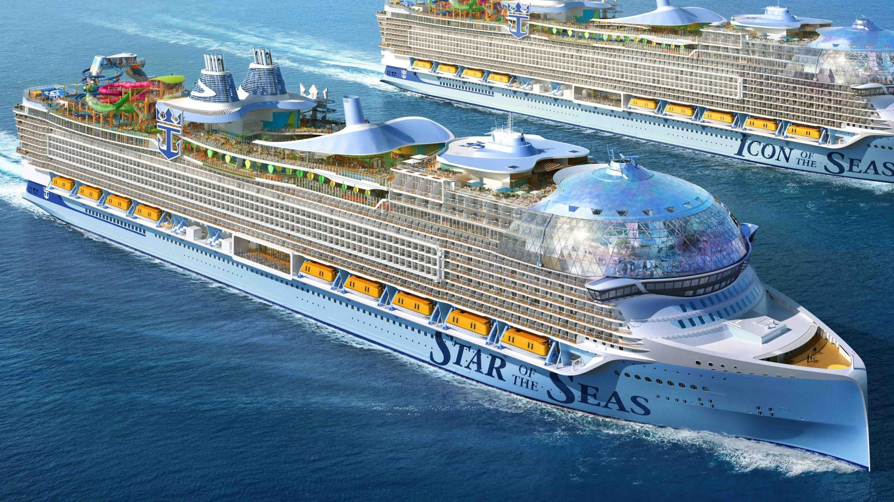
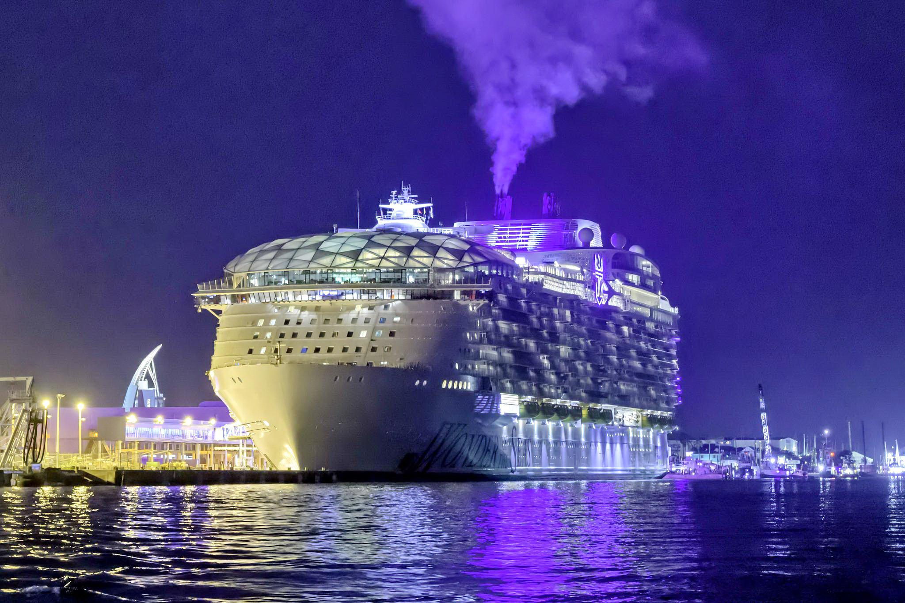
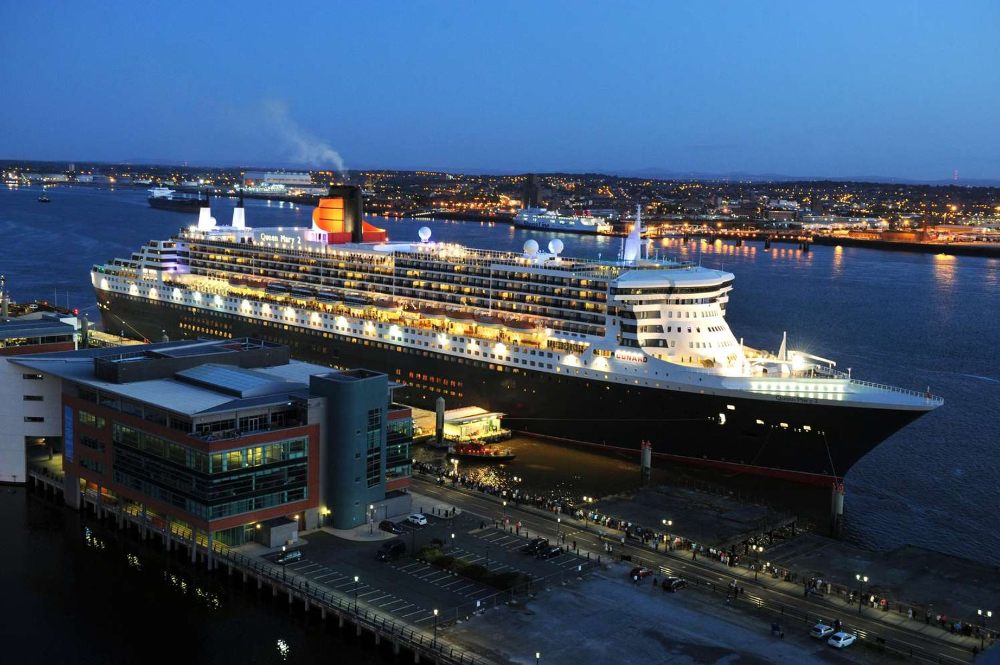

Icon of the Seas
Этот лайнер — настоящий город. Внутри есть даже настоящий парк с живыми деревьями.

Путешествия в океане
Этот лайнер — настоящий город. Внутри есть даже настоящий парк с живыми деревьями.

Лайнер разделен на «районы», чтобы пассажиры могли легко ориентироваться на борту.

Единственное судно, которое официально считается океанским лайнером, а не просто круизным судном.
